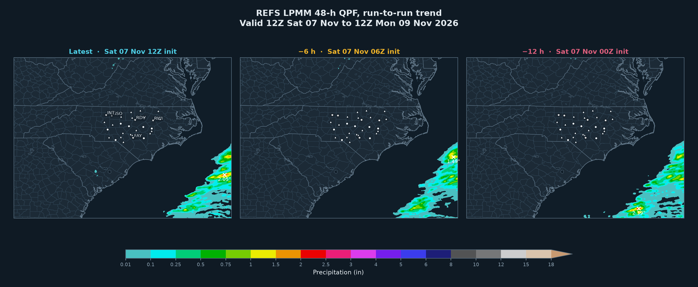
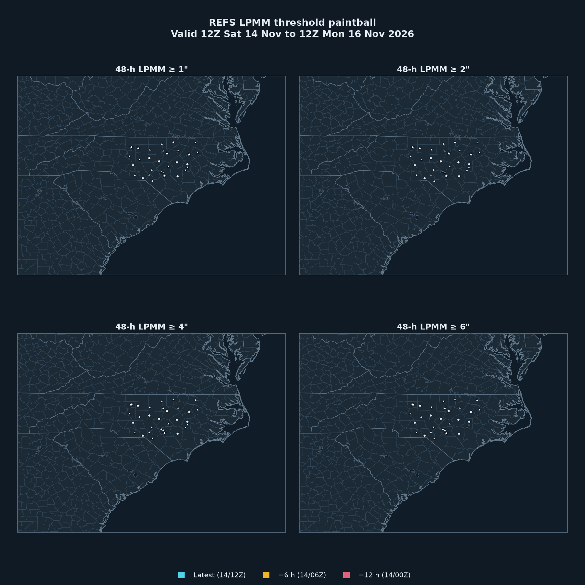
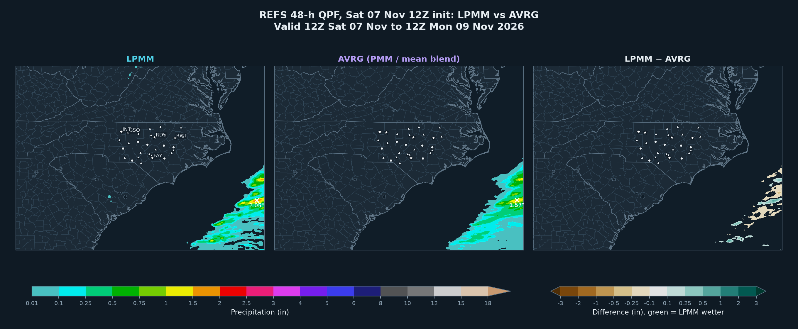
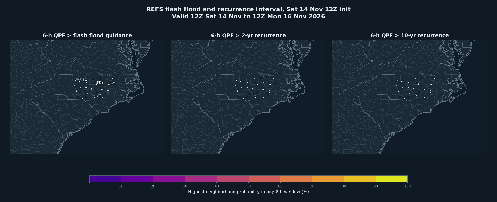

Ensemble agreement scale probability that 6-h QPF meets the threshold. Spread is built in, so this answers “how likely” where LPMM only answers “how much.”
Same 48-h valid window from the latest run and the two previous 6-hourly cycles. A wetter or drier trend across panels is the signal; × marks each panel’s maximum.

Areas where each run’s 48-h LPMM meets the threshold. Overlap between colors means the runs agree on placement.

LPMM keeps realistic peak amounts; AVRG blends the probability-matched mean with the plain mean, so it runs smoother and lower in the cores. A large green difference over a small area is a high-impact but low-confidence core. Little difference means the members agree.

Highest neighborhood probability, in any 6-h window of the next 48 h, that rainfall exceeds flash flood guidance or a recurrence-interval amount. Florida guidance values are high, so anything above about 10% here is notable.

Nearest grid point. Bars are the latest LPMM, solid lines earlier runs, dashed AVRG. The bottom panel is the EAS 6-h probability at the site.